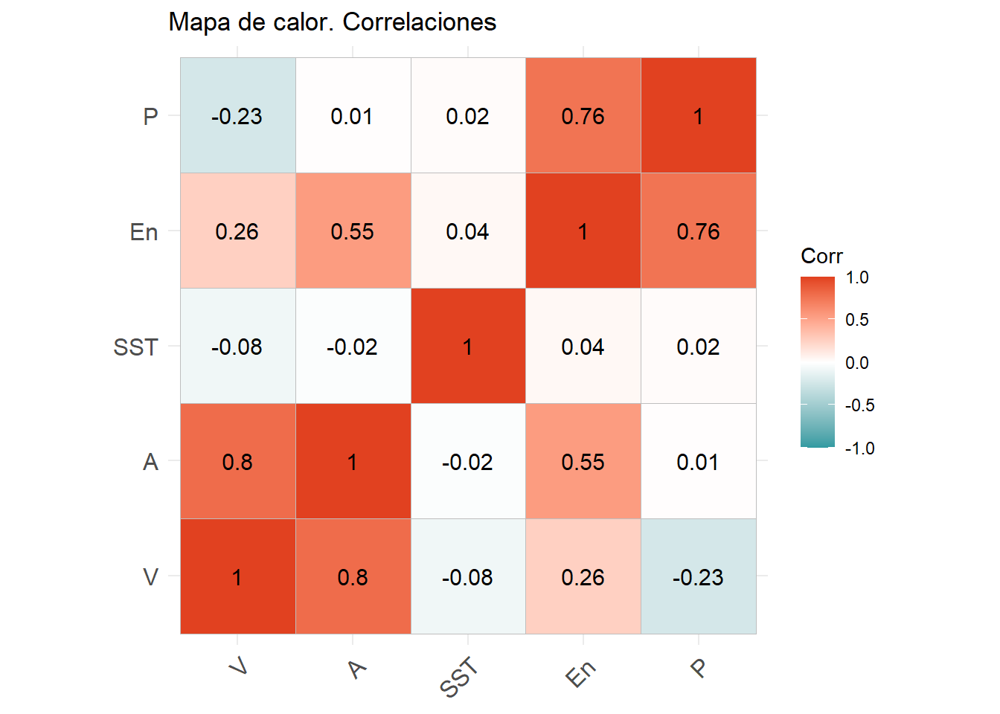

Rows: 150
Columns: 8
$ V <dbl> 11.532252, 12.754143, 7.625695, 12.430652, 6.715388, 2.584285, 13.…
$ En <dbl> 225.38187, 181.72096, 219.07680, 206.88792, 156.24829, 103.84986, …
$ P <dbl> 11.027286, 9.362339, 13.589859, 9.962744, 13.377111, 10.171574, 8.…
$ A <dbl> 1.3874354, 1.4052574, 1.3841311, 1.6291357, 1.0473364, 0.9023950, …
$ DV <chr> "S", "NE", "N", "E", "SW", "E", "NE", "SW", "N", "W", "N", "S", "N…
$ M <chr> "ALTA", "ALTA", "BAJA", "BAJA", "BAJA", "ALTA", "BAJA", "ALTA", "A…
$ DAT <date> 2017-02-26, 2017-02-27, 2017-02-28, 2017-05-30, 2017-05-19, 2017-…
$ SST <dbl> -99.90, -99.90, -99.90, 22.15, 22.20, 22.65, 22.70, 22.75, 22.75, …Predicción oleaje
20582- Análisis de Datos para el GMAT
Podemos encontrar todo el código en el repositorio de GitHub
Introducción
La predicción de la situación costera es muy importante para logística portuaria, para la pesca, para la seguridad de zonas costeras y para cualquier aficionado al deporte.
En nuestro caso, queremos saber si un dia, será bueno o no para ir a practicar surf. Cualquiera que haya intentado hacer esta predicción sabrá que es muy complicado predecir un buen dia de olas. Hay muchos factores que tener en cuenta y solo una combinación caprichosa de estos factores puede llevar a un gran dia de surf. En este proyecto hacemos un análisis de distintos factores que influencian al oleaje, junto al oleaje que hubo ese dia.
Las muestras de datos són aleatorias generadas a partir de funciones de R. Para aportar realismo hemos hecho una interpretación de datos que hemos obtenido de aplicaciones como WindGuru, Windy o TodoSurf (que solo son semanales). Además para la generación de datos definimos una dependencia temporal, ya que no seria lógico que hoy hubiese olas de dos metros y a las 12 horas el mar este en calma.
Estudiaremos varias variables como la altura de la ola, la energía, la dirección del viento y el estado del viento. Queremos analizar si podemos describir de manera significante la altura y la energía en función del viento. También que en el paso del tiempo hay una mejora de la calidad de la hola hasta que se pierde la energia.
Este estudio lo haremos para una playa orientada hacia el norte. En concreto és la zona de Bilbao, vease la siguiente imagen:
Hemos elegido este lugar debido a la regularidad costera del mar cantábrico, donde por norma general siempre hay olas en mayor o menor medida.
Nuestra hipótesis és que después de un dia de mucho viento obtenemos una mayor calidad de olas.
El objetivo de este proyecto es aportar un modelo de predicción del oleaje a partir de datos como el viento. También definiremos un SurfRating para definir la calidad de la ola para hacer surf, y estudiar las probabilidades de un buen dia de surf. Entonces queremos comprobar que después de un dia de más viento hay buenas olas.
- Como estudiaremos esta hipótesis?
Lo primero sera definir una variable cualitativa ordinal que nos caracterize la calidad de la ola la cual llamaremos SurfRating (\(X\)). Una vez definida esta variable \(X\) queremos estudiar \(P(X \in A|_{Y|_{D_i}>\mu_Y, D_{i+1} })\) donde \(Y\) es la variable que representa el viento y \(A\) son los niveles de una buena calidad de olas.
Primero estudiaremos la relación de los datos de manera atemporal, y veremos la relación del viento con la magnitud de las olas, la energía y el periodo. Que son las tres variables que nos definiran en mayor medida la calidad de la ola.
- Contraste \(X|_Y > \mu_X\)
Añadiremos la variable SST que indica la temperatura de la superficie del agua de la base de datos de INTRODUCIR DATOS CON BIBLIOGRAFIA!
Analisis exploratorio:
Observemos nuestros datos. En el estudio de () salió que el termostato de la bolla fallo algunos dias, lo podemos observar en la siguiente tabla. Entonces deberemos filtrar estos datos
Observamos que trabajamos con 8 variables, en el siguiente oren:
- Viento en nudos
- Energía en kJ
- Periodo em segundos
- Altura de la ola en metros
- Dirección viento que puede tomar los valores: Norte (N), Este(E), Oeste(W), Sud(S), Nor-este(NE), Nor-oeste(NW), sureste(SE) y suroeste (SW)
- Marea que puede ser alta o baja (en nuestro experimento hacemos una medición con la marea alta y otra con la marea baja, que serian cada 12 horas)
- Fecha que es el dia y hora de la medición
- SST, Surface Sea Temperature, una variable de la base de datos esta
Para hacer un estudio de nuestras variables primero reoordenaremos nuestros datos y filtremos en los que fallo el termostato:
datos <- datos[,c('DAT','V','En','P','SST','A','DV','M')]
datos <- datos %>% filter(SST > 0)
datos_numericos <- datos %>% dplyr::select(V,En,P,SST,A)Calculemos la varianza generalizada y la varianza total. Estos dos datos nos dice la dispersión de nuestras observaciones y
[1] "Varianza total: 878.198440300497"[1] "Varianza generalizada: 2653.25791012541"Pues observamos que obtenemos datos bastante dispersos sin embargo al mirar la matriz vemos que la variable que aporta toda esta dispersión es en mayor proporción la energía, de hecho observemos estos valores cuando no tenemos en cuenta la energia:
[1] "Varianza total: 2.77657231566631"[1] "Varianza generalizada: 23.2199832991468"Hacemos un analisis de las relaciones de nuestras variables con un mapa de calor, asi podremos estudiar cual de nuestros objetivos para probar la hipótesis puede resultar más interesante. Observemos el siguiente mapa de calor
datos_numericos %>% cor(.) %>% ggcorrplot(hc.order =TRUE, lab = TRUE,
colors = c("#2F9AA1",
"white", "#E14120"), method = 'square') + ggtitle('Mapa de calor. Correlaciones')
Como podemos observar hay una alta correlación positiva entre el viento y la altura de las olas. Y la altura tiene una relación positiva con la energía. Sin embargo, como veremos después una disminución del periodo viene relacionado con peores olas, y la matriz de correlaciones nos indica que un aumento del viento puede llevar a una disminución del periodo.
Surf-Rating
El surf-rating se definira como una variable cualitativa de 6 niveles. Esta variable indicará la calidad de la ola para hacer surf siendo 1 muy mala y 6 muy buena. Niveles:
- Baja y poca fuerza (BPF): Olas de menos de 0.5 metros o de energia menor que 80kJ.
- Olas bajas (B): Olas de entre 0.6 y 0.9 metros, con una energía mayor de 80 kJ.
- Oleaje medio movido (MM): Olas de entre 1 y 1.4 metros, con viento a sur, sur-osete o sur-este.
- Oleaje medio glass (MG): Olas de entre 1 y 1.4 metros, con viento de tierra.
- Oleaje alto movido (AM): Olas de mas de 1.5 metros, con viento a sur.
- Oleaje alto glass (AG): Olas de mas de 1.5 metros, con viento de tierra.
datos <- datos %>% mutate(SurfR = case_when(
(A <= 0.5 | En < 80) ~ "BPF",
(A >= 0.6 & A <= 0.9) ~ "B",
(A >= 1 & A <= 1.4 & DV %in% c("S", "SW", "SE", "W", "E")) ~ "MM",
(A >= 1 & A <= 1.4 & DV %in% c("N", "NW", "NE")) ~ "MG",
(A > 1.4 & DV %in% c("S", "SW", "SE", "W", "E")) ~ "AM",
(A > 1.4 & DV %in% c("N", "NW", "NE")) ~ "AG",
TRUE ~ NA_character_ # Para cualquier otro caso (opcional), asignar NA
))Esta variable sera muy interesante para el surfista. Asi que la modelizamos con una multinomial.
multiN_data
AG AM B BPF MG MM
0.11510791 0.17985612 0.01438849 0.09352518 0.23741007 0.35971223 Para el surfista de nivel medio que va a estar un puente en Bilbao le interesa saber que cual es la probabilidad de que en 4 dias haya al menos un dia de olas medias glass (MG) es decir \(P(MG \geq 1)\).
Si tenemos un \(M(4,p_{AG},p_{AM},p_{BPF},p_{MG},p_{MM})\) entonces:
\[ P(MG \geq 1) = 1 - P(MG = 0) \]
[1] "Probabilidad de que un dia haya olas medias con viento de tierra: 0.701"Otro factor importante de la calidad de la ola es el periodo, entonces la última variable que definira la calidad de la ola es el Periodo.
Descripción por regresión lineal
Supongamoos ahora que nuestra boya mide el periodo, la altura y tenemos un medidor de la velocidad del viento. Entonces intentaremos diseñar un modelo de regresión lineal para aproximar cual seria la energía.
Lo hacemos de esta manera porque muchas veces es complicado medir la energía que tiene una ola, sin embargo si disponemos de una bolla y un () podremos saber cuales son los datos. La energía de la ola es un dato importante para el surfista porque así sabra si el tipo de ola es el adequado para la tabla que utiliza y su experiencia.
En el análisis exploratorio de nuestras variables hemos visto que podíamos suponer normalidad en la energía pero no era así para la temperatura. Entonces para poder suponer que nuestro modelo lineal sigue una normal, y visto la baja correlación de estas dos variables no tendremos en cuenta la temperatura. Entonces si \(X1,X2\) y \(X3\) son los datos viento, la altura y el periodo respectivamente deseamos crear un modelo de la forma:
\[ Y = \beta_0 + \beta_1X_1+\beta_2X_2 + \beta_3X_3 + \epsilon\] Y estimar los parámetros \(\beta_0,\beta_1,\beta_2,\beta_3\). En este análisis \(\epsilon\) es el termino de error y sigue una multinormal centrada en el cero y homocedática. Entonces \(Y\sim \mathcal{N}(X\beta,\sigma^2I)\) donde \(X = (\underline{1},X_1,X_2,X_3)\) y \(\beta = (\beta_0, \beta_1,\beta_2,\beta_3)^T\).
\[ f_{\beta, \sigma^2}(Y) = \frac{1}{(2\pi\sigma^2)^{\frac{n}{2}}}exp\left\{-\frac{1}{\sigma^2}(Y-X\beta)^T(Y-X\beta) \right\} \] \[ l_Y(\beta,\sigma^2) = log(f_{\beta,\sigma^2}(Y)) \] \[ \frac{\partial l_Y}{\partial\beta}(\beta,\sigma^2) = \frac{1}{\sigma^2}X^T(Y-X\beta) =: Score(\beta) \]
X <- datos_numericos %>% dplyr::select(V,P,A) %>% mutate(V1 = 1)
X <- X[,c('V1','V','P','A')] %>% as.matrix()
Y <- datos_numericos %>% dplyr::select(En) %>% as.matrix()
Score <- function(b){
return(t(X)%*%(Y-X%*%b))
}Entonces ya podemos definir la función
regresion <- summary(lm(Y ~ X[,2]+ X[,3] + X[,4]))$coefficients[,1] %>% as.matrix()
recta_r <- function(x1,x2,x3){
v = matrix(c(1,x1,x2,x3), ncol = 4)
return(v%*%regresion)
}
Score(regresion) En
V1 4.276046e-11
V 3.467129e-10
P 4.388214e-10
A 5.604495e-11Contraste de la hipótesis
Como afecta la dirección del viento a las características de la ola?
Definiremos dos ‘poblaciones’ en función de la dirección del viento y realizamos un test del tipo:
\[ H_0: \mathbb{\mu_1} = \mu_2 \] Pero siguen nuestras distribuciones una multinomial? Si realizamos un test de normalidad de cada una de las variables observamos que si, exceptuando la temperatura que no la tendremos en cuenta por la baja correlación (Test de independencia?).
colMeans(Y_mar) V En P A
7.825984 160.285474 10.050686 1.276616 colMeans(Y_tierra) V En P A
7.833566 148.595634 9.685664 1.267921 Test stat: 2.6951
Numerator df: 4
Denominator df: 118
P-value: 0.623 Comparación
Conclusión
Bibliografia
Anexo
Construcción de la base de datos
covarianza <- matrix(c(13, 77, -2, 0.25,
77, 5000, 134, 10,
-2, 134, 6, 0.12,
0.25, 10, 0.12, 0.05), ncol = 4, byrow = TRUE)
medias <- c(8, 164, 10, 1.3)
set.seed(43)
datos_numericos <- mvrnorm(150, mu = medias, covarianza) %>% as.tibble()
names(datos_numericos) <- c('V','En','P','A')
# Limitamos a resultados realistas
datos_numericos <- datos_numericos %>%
mutate(
V = pmax(V, 0),
En = pmin(pmax(En, 1), 5000), # Energía entre 1 y 5000
P = pmin(pmax(P, 5), 20), # Periodo entre 5 y 20 s
A = pmin(pmax(A, 0), 20) # Altura entre 0 y 20 m
)
# Añadimos una dependencia temporal
for (i in 2:nrow(datos_numericos)) {
datos_numericos$A[i] <- 0.3 * datos_numericos$A[i - 1] +
0.5 * datos_numericos$A[i] + (datos_numericos$V[i]/8*1.3)*0.2
datos_numericos$En[i] <- 0.3 * datos_numericos$En[i - 1] +
0.7 * datos_numericos$En[i]
}
# Suponemos que nuestra bolla mide cada 12 horas
direccion_viento <- sample(c('N','W','S','E',
'NW','NE','SW','SE'),150, replace = TRUE)
marea <- sample(c('ALTA','BAJA'),150, replace = TRUE) # Cambiar a alternado
primer_dia <- as.Date("2017-01-01")
fechas <- seq(from = primer_dia, by ='day', length.out = 150)
datos_cual <- tibble(DV = direccion_viento,
M = marea,
DAT = fechas)
datos <- tibble(datos_numericos,datos_cual)
kaggle_data <- read.csv('kaggle_data.csv',header = TRUE)
datos_nuevos <- kaggle_data %>% filter(grepl('12:00',Date.Time)) %>% dplyr::select(Date.Time,SST)
datos_nuevos <- datos_nuevos %>% mutate(
Date.Time = seq(from = primer_dia, by ='day',length.out =
length(datos_nuevos$Date.Time)))
names(datos_nuevos) <- c('DAT','SST')
datos <- datos %>% right_join(datos_nuevos) %>% slice(1:150)